|
こんにちは、トビー・フォックスです。春ですねー！前回のメルマガを配信してから、もう3か月たつなんて、信じられますか！？僕は信じられません。だって、これを書いてる今は、2月だから！あはははは！ |
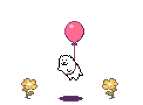 |
|
花から花へ～ とまるよ～ あそぶよ～♪ |
それじゃさっそく…UNDERTALE/DELTARUNE関連のニュースからお届けします！ノーマルコースで登録した方には、何より先にお伝えするべき情報ですから！ |
…はい。ごめんなさい。でも、大事なお知らせなんで、聞いてください。 |
今日は、みなさんに胸を張ってお伝えしたいことがあります。 |
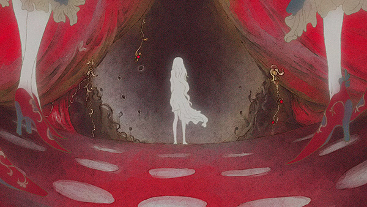 |
少し前に、僕と糸奇はなさんとで、「THE GREATEST LIVING SHOW」という曲を共作しました。この曲をリリースするにあたって、僕とはなさんが共作したもうひとつの曲、「74」のミュージックビデオ用にイラストを描いてくれたBani-chanさんに、今度はアニメーションのミュージックビデオを作ってもらいたいと思ったんです。そこで僕は、この曲の物語のあらすじと、歌詞を英語に翻訳したものをBani-chanさんに渡して、あとは自由に制作してもらうことにしました。それからかれこれ2年…ついに、そのビデオが完成しました！ |
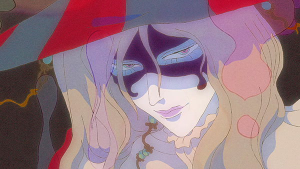 |
Bani-chanさんは、2年という長い歳月をかけて、このビデオの最初の1コマから最後まで、全部1人で制作しました。ポーズも、カメラアングルも、キャラクターデザインも、エフェクトも、動画の処理も…1フレーム1フレーム、すべて彼女が丹精込めて手作りしたものです。 |
冒頭からラストまで順番に仕上げていったそうなんですが、制作が進んでいくにつれて彼女のスキルも目指す水準もどんどん上がっていって…結果、4分間の映像に、Bani-chanさんの2年間の熱心な創作活動と成長ぶりが凝縮される形になりました。ビデオを見れば、みなさんにもそれがわかると思います。 |
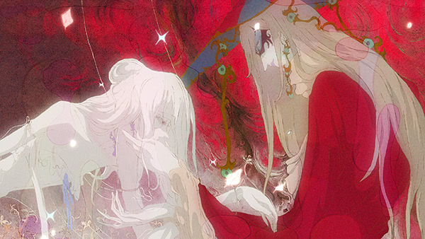 |
このビデオをみなさんのもとへ届けるために、____や____も犠牲にしたBani-chan。ついに、彼女と彼女の血と汗と涙の結晶が、スポットライトを浴びるときがきたのです。さあ、みなさん…仮面を着けて、グラスを手に…いざ、ご覧あれ！色鮮やかな、「最高のショー」を…！ |
※注意※このビデオには、刺激の強い映像が含まれます。ご視聴の際はご注意ください。「最高のショー」は、よい子のみなさんが寝静まったあとに幕を開けるのです… |
|
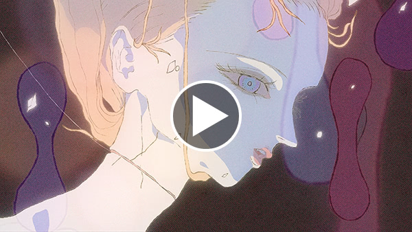 ビデオを見る » |
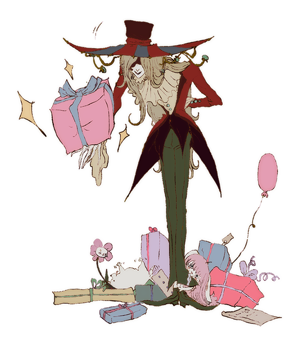 |
はい。ショー、見終わりましたね？じゃ、そのままギフトショップへお進みください… |
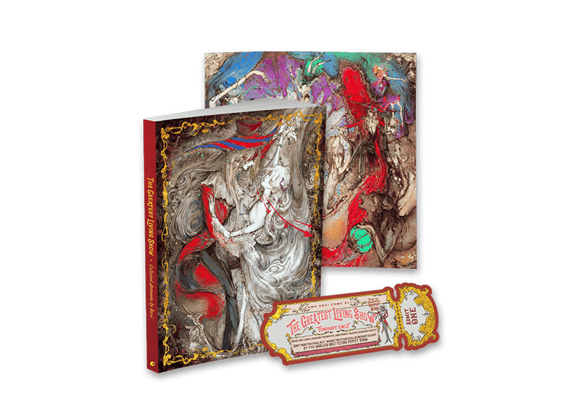 |
僕が個人的にこのビデオのアートを収録したアートブックが欲しかったので、Fangamerに頼んで作ってもらうことにしました。他にも欲しい人がいたら、たぶん、買えると思います。でも、基本、僕用です。 |
あと、曲が欲しい人は、どこかで買えると思います。たぶん、こことか？ |
以上、UNDERTALE/DELTARUNEと関係ないニュースでした！ |
|
…と見せかけて、まだ続きます！ |
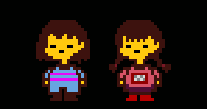 |
唯一無二の“空気”を味わえるゲーム『ゆめにっき』は、僕が特に大きな影響を受けた作品の1つです。そして、僕は先日、その作者であるききやまさんにインタビューする機会をいただきました。 |
僕の知るかぎり、ききやまさんがインタビューに応じたのは、今回が初めてです。でも、それってたぶん、これまで誰も「答えてもらえるようなインタビュー」をしなかったからじゃないかと思うんです。 |
じゃあ、今回僕が行ったインタビューはどんなものだったのかというと…僕が聞いたのは、「『はい』か『いいえ』で答えられる質問」9つと、「デニーズの質問」1つだけでした。 |
説明するより、実際に読んでもらったほうが早いかな！下のリンク先で、全文無料で読めます！ |
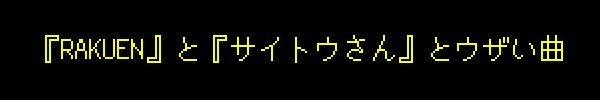 |
『DELTARUNE Chapter 1』のエンディングソング、「Don't Forget」を歌ってくれた鴫原ローラさん、知ってますか？彼女が作った、クスッと笑えてほっこり心があたたまるRPGツクール製ゲーム『RAKUEN』が、3月23日にNintendo Switchでリリースされました！ |
このSwitch版には、おまけの短編ゲーム『サイトウさん』もついてくるんですが、その中に1人、とにかくウザいキャラクターが出てくるんです。ローラさんはそのシーンで流す「ウザい曲」を作るのに苦戦して、僕に連絡をくれました。彼女いわく、「トビーはこういうの得意だと思って」。 |
…そうだね、ローラ。たしかに僕、ウザい曲、作るよね… |
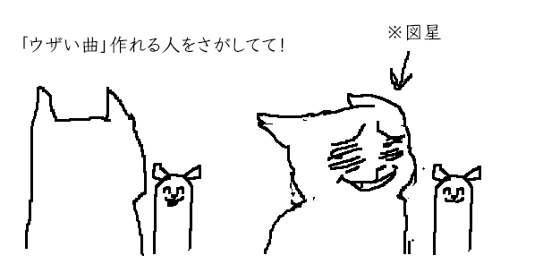 |
（はい、やっとです） |
今はおもに、Chapter 3の完成を目指して作業を進めています！ |
Chapter 3の翻訳作業も、まもなく開始になりますよ！でも、翻訳者さんにはまだ言ってないので、彼女はここを訳すときに初めて知ることになります。ふふふふふ… |
（翻訳者：今、訳しながら「はッ！？」って言いました… マジっすか…？） |
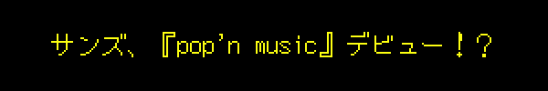 |
サンズが『pop'n music』の新キャラになりました！『pop'n music』シリーズは僕も大好きな音ゲーの1つなので、夢みたいです。 |
見た目や動きは『UNDERTALE』のサンズとはかなり違うけど、めちゃくちゃかわいい仕上がりになってますので、ひと味違ったサンズに出会いたい方はぜひチェックしてみてください！ |
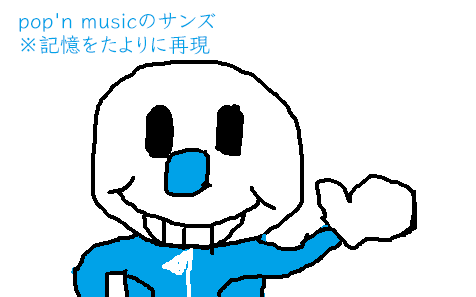 |
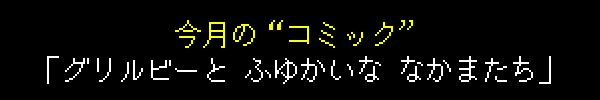 |
|
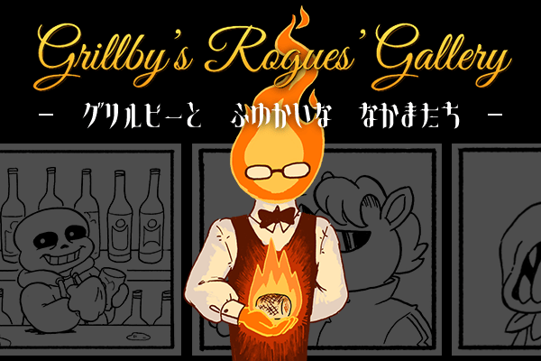 “コミック”を読む » |
今後シリーズでお届けする予定のインタビュー企画！第1弾は…みんな大好き、テミーさんです！！ |
|
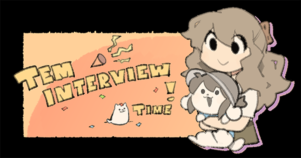 インタビューを読む » |
ねんどろいど |
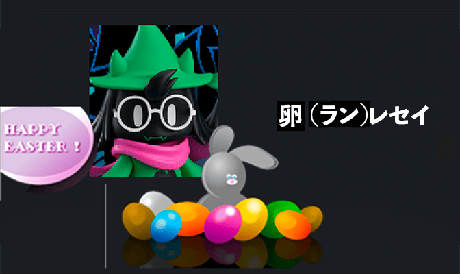 |
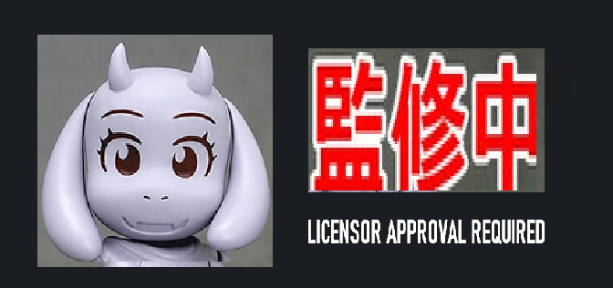 |
|
さてさて、ステキな春を過ごせましたか？ここまで読み終わるころには、もう春も終わっちゃうかな… |
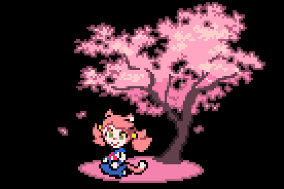 |